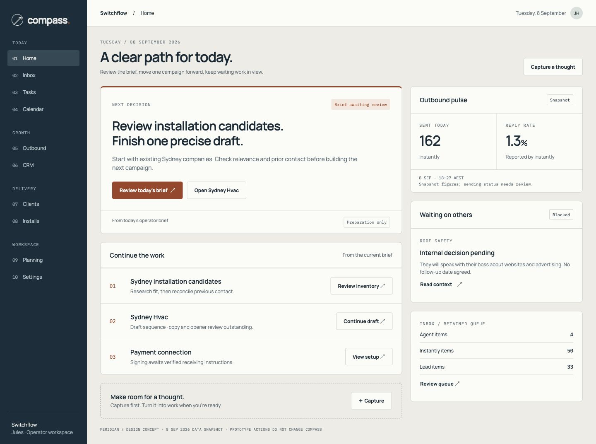
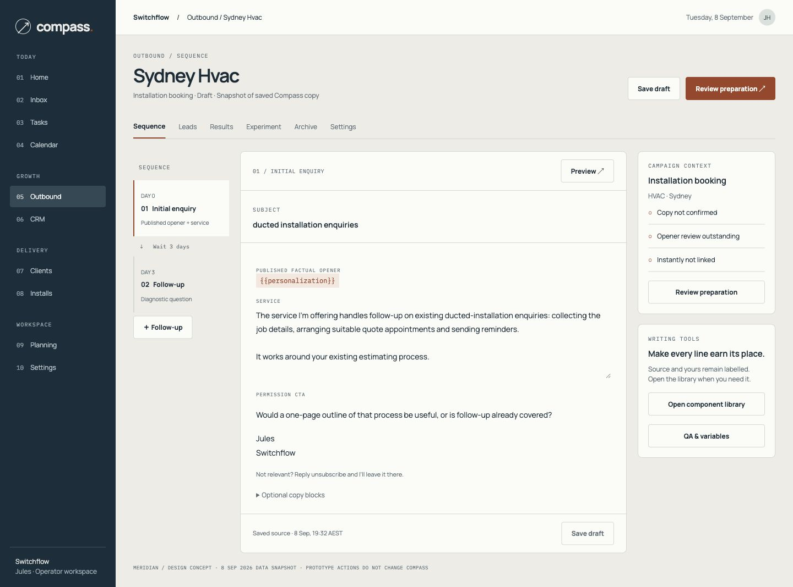
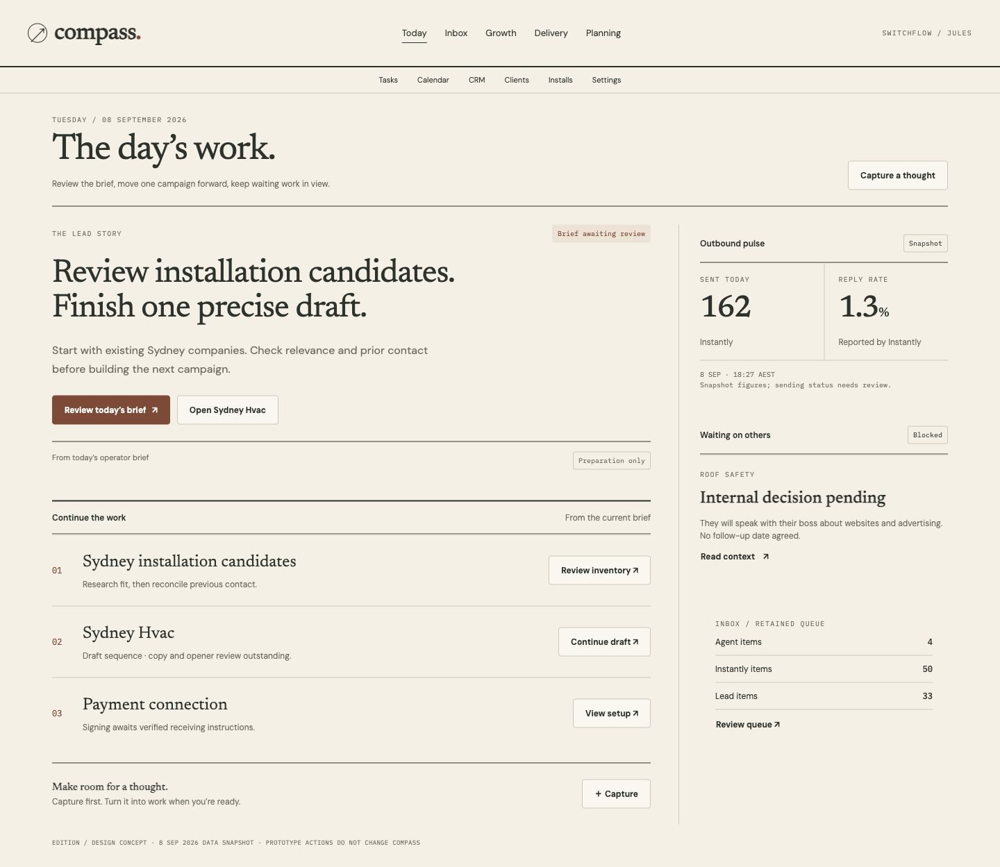
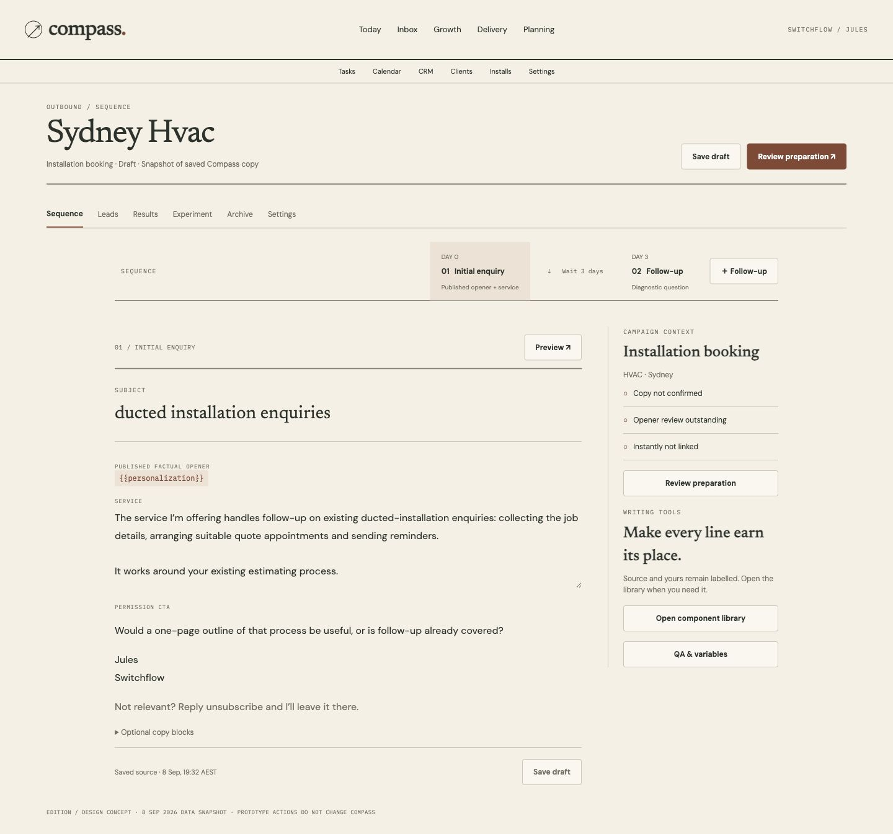
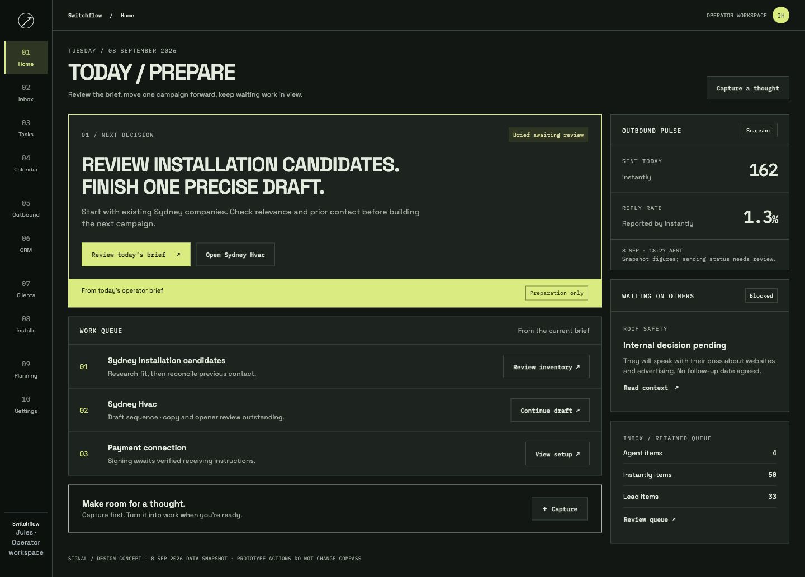
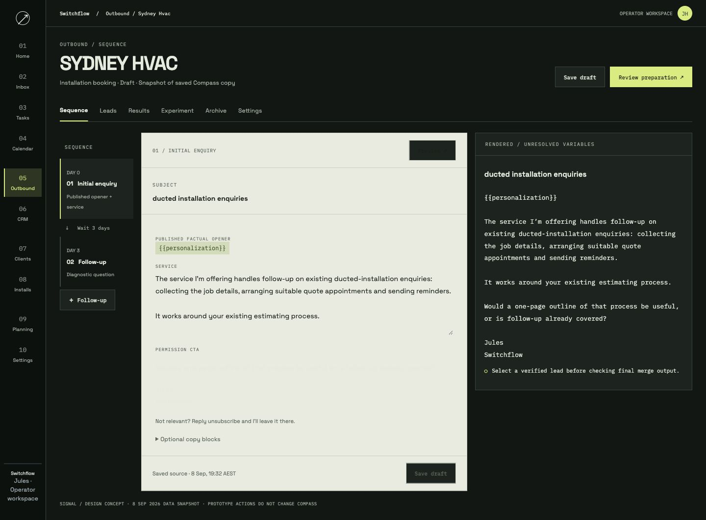

01 / OPERATIONS COCKPIT
Meridian
Composed navigation. A clear decision.
Recommended for Compass’s breadth.

SEQUENCE / LETTER + CONTEXT

High-fidelity concepts · Real Compass snapshot
Direction approval pending · Not deployed
Composed navigation. A clear decision.
Recommended for Compass’s breadth.


A daily edition, a manuscript, a work index.
Strongest for thinking and writing.


Explicit states and a dispatch-style queue.
Strongest for rapid operational scanning.

